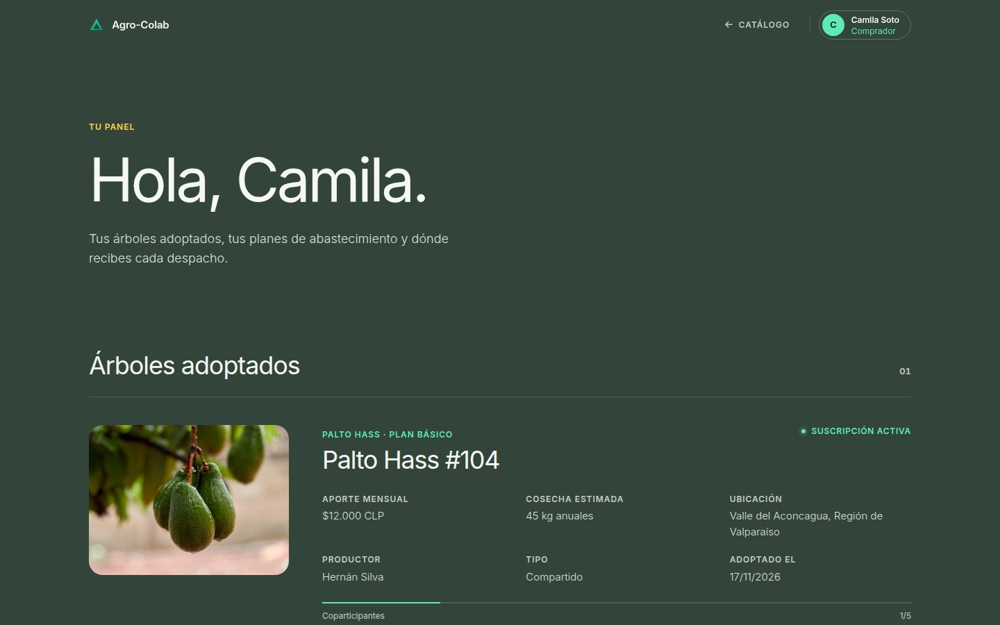
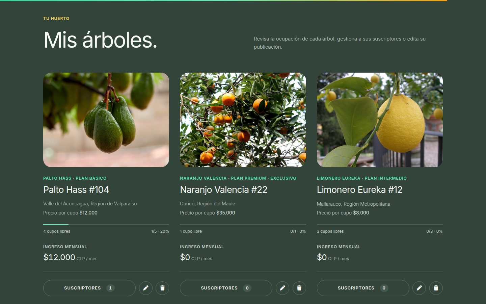
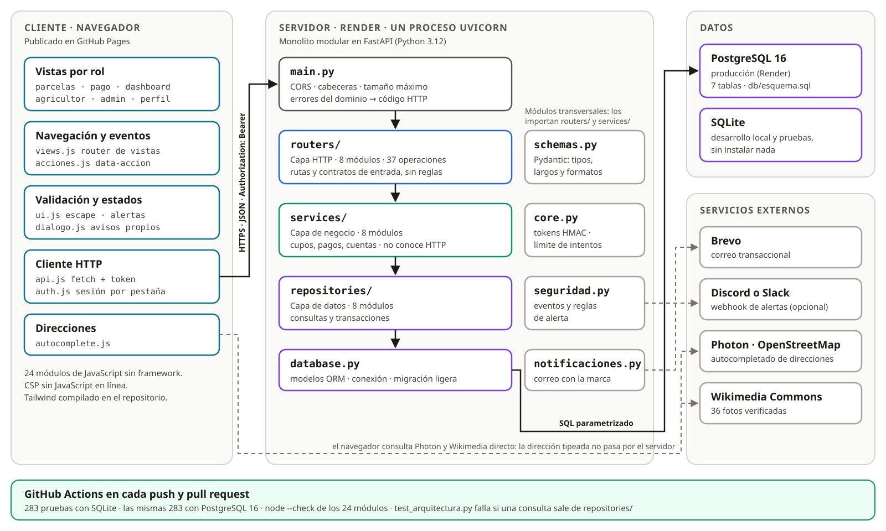
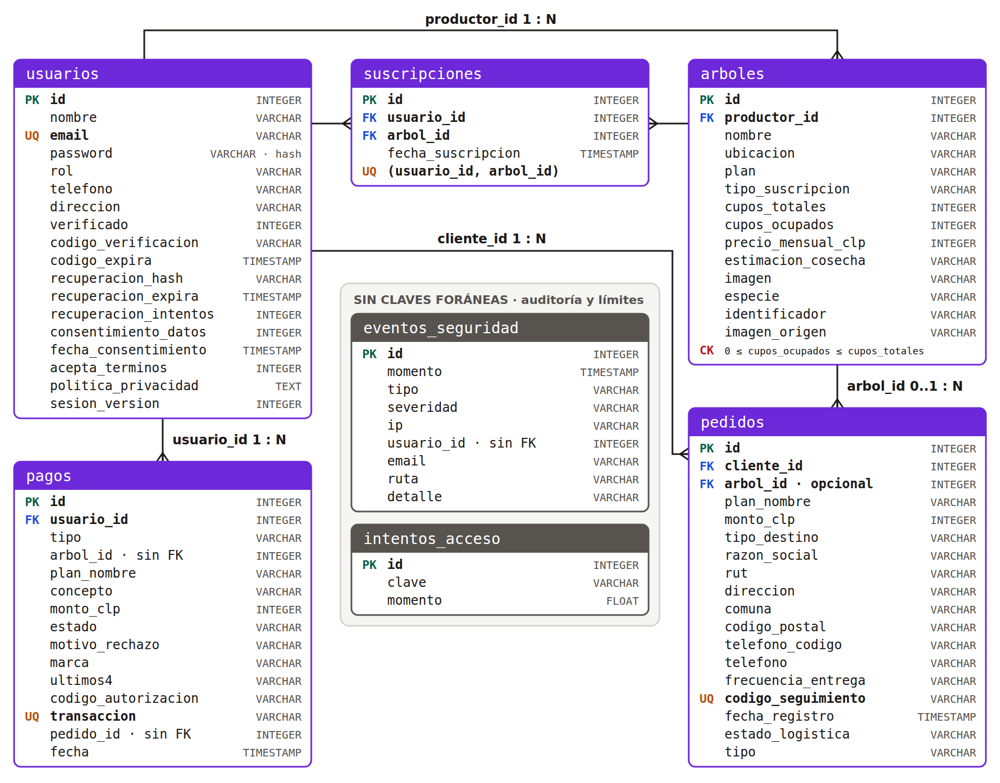
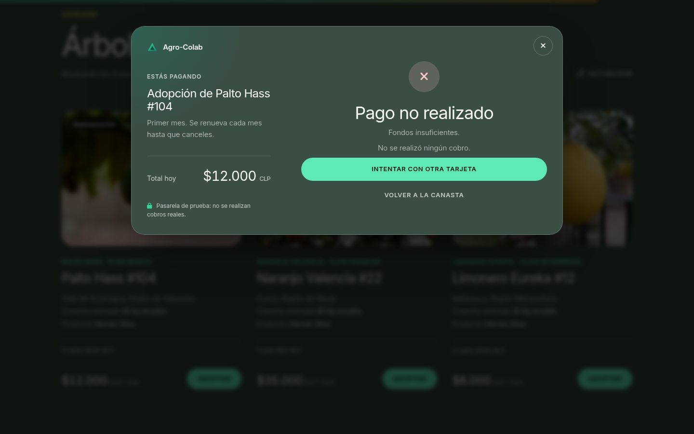

1Introducción
El pequeño agricultor chileno necesita capital antes de la temporada y suele terminar vendiendo su cosecha a intermediarios que se quedan con buena parte del margen. Al mismo tiempo, el consumidor urbano quiere saber de dónde viene lo que come. Agro-Colab nació en el Hito 1 como una promesa para las dos partes: para el consumidor que quiere fruta con origen conocido y para el productor ahogado por los intermediarios, Agro-Colab permite adoptar árboles frutales y contratar canastas de cosecha, pagando por adelantado y directo al agricultor (Alveal et al., 2026a).
El Hito 2 construyó el servicio que sostiene esa promesa: una API REST en FastAPI, separada en capas, con persistencia en PostgreSQL (Alveal et al., 2026b). Este documento cierra el proyecto. Describe el producto tal como quedó entregado en la rama principal del repositorio: una interfaz web conectada a ese servicio, en la que el comprador adopta un árbol, paga, indica el despacho y vuelve a encontrar su adopción después de recargar la página.
El objetivo es que el lector pueda verificar, sin ayuda del equipo, qué se construyó, cómo está organizado por dentro y qué quedó pendiente. La sección 2 recorre el producto y lo compara con lo prometido. Las secciones 3 a 5 explican la arquitectura final, el modelo de datos y el manejo de errores en la interfaz. La sección 6 resume las pruebas y la seguridad. La sección 7 muestra cómo se levanta el proyecto en otro equipo. La sección 8 reconstruye cómo evolucionaron las decisiones y qué salió mal. La sección 9 declara las limitaciones. Los anexos contienen la declaración de uso de inteligencia artificial, el análisis de datos personales según la Ley 21.719 y los datos de prueba.
2El producto entregado
2.1Qué hace y para quién
Agro-Colab es una aplicación web con tres roles. El comprador adopta un cupo de un árbol frutal concreto o contrata una canasta de abastecimiento, paga en una pasarela simulada e indica dónde quiere recibir la cosecha. El agricultor publica sus árboles, elige el plan de cada uno y ve cuánto le genera cada árbol y quiénes lo financian. El administrador gestiona las cuentas. La interfaz se adapta al ancho de un celular, pero no se construyó una aplicación móvil nativa.
| Línea | Qué compra el cliente | Planes |
|---|---|---|
| Adopción de árboles | Un cupo sobre un árbol concreto, con su ubicación, productor y cosecha estimada | Básico (5 cupos), Intermedio (3) y Premium (exclusivo) |
| Abastecimiento | Una canasta de cosecha con entrega programada a un domicilio o a un local | Huerto Esencial, Familiar y Lote Gastronómico (B2B, con razón social y RUT) |
2.2Flujo principal de punta a punta
El flujo principal es la adopción de un árbol, porque es el que cumple la promesa: el dinero del comprador financia un árbol concreto antes de la cosecha. Las figuras 1 a 8 son capturas del producto real, tomadas el 17 de noviembre de 2026 con el backend corriendo sobre una base nueva. La Tabla 2 relaciona cada paso con la petición HTTP y con lo que queda guardado.

GET /api/arboles.




| # | El usuario | Petición | Qué ocurre en el servidor |
|---|---|---|---|
| 1 | Ingresa como comprador | POST /api/login → 200 | Compara el hash bcrypt y entrega un token firmado de 7 días |
| 2 | Abre el catálogo (Fig. 1) | GET /api/arboles → 200 | Lee los árboles con sus cupos ocupados |
| 3 | Elige un árbol y lo agrega a la canasta (Fig. 2 y 3) | GET /api/suscripciones/usuario/{id} | Comprueba que no lo haya adoptado antes. La canasta vive en el navegador hasta pagar |
| 4 | Paga con una tarjeta de prueba (Fig. 4 y 5) | POST /api/pagos/canasta → 201 | Fija el monto, reserva el cupo con un UPDATE condicional, crea la suscripción y el pago en una sola transacción |
| 5 | Indica el despacho (Fig. 6) | POST /api/pedidos → 201 | Valida dirección, celular y código postal, y genera un código de seguimiento único |
| 6 | Abre su panel (Fig. 7) | GET /api/suscripciones/usuario/{id}, GET /api/pedidos, GET /api/pagos | Devuelve solo los datos del dueño del token |
| 7 | Recarga la página (Fig. 8) | Las mismas lecturas | El árbol sigue ahí: quedó en PostgreSQL, no en el navegador |
El mismo recorrido se comprobó desde el otro lado: al entrar como agricultor, el árbol adoptado aparece con un cupo ocupado y un ingreso mensual de $12.000 (Figura 9). El dato que escribió el comprador llega al panel de otro rol sin intervención manual.


2.3Otros recorridos implementados
- Cuenta: registro con consentimiento explícito y verificación por correo, inicio de sesión, recuperación de contraseña con código de un solo uso, edición del perfil, descarga de los datos propios y eliminación de la cuenta con la contraseña actual.
- Comprador: canastas de abastecimiento (con razón social y RUT validado en el plan B2B), modificación del destino de un pedido y cancelación de una suscripción, que libera el cupo.
- Agricultor: publicación desde un catálogo cerrado de 12 especies con 36 fotos verificadas, edición y eliminación de árboles, gráficos de ingresos, ocupación y adopciones por mes, y expulsión de un suscriptor.
- Administrador: listado de cuentas con búsqueda y filtro, corrección de datos, verificación manual, cambio de contraseña y eliminación. La cuenta de administrador solo se crea desde variables del servidor.
2.4Lo prometido frente a lo entregado
| Compromiso del Hito 1 | Dónde quedó | Estado |
|---|---|---|
| Catálogo de árboles con sus planes | Vista de catálogo y GET /api/arboles, con filtro por plan | Cumplido |
| Cupos por plan: 5, 3 o exclusivo | El servidor impone los cupos y el tipo de cada plan | Cumplido |
| Adoptar descuenta el cupo en la base | Reserva atómica dentro del pago (sección 4.2) | Cumplido |
| Panel personal después de adoptar | Panel del comprador (Figuras 7 y 8) | Cumplido |
| Pago directo al productor | Pasarela simulada: el flujo existe, pero no mueve dinero | Simulado |
| Trazabilidad del origen | Cada árbol muestra productor, ubicación y foto verificada, y cada pedido tiene un código de seguimiento | Cumplido |
| Seguimiento del despacho | El pedido guarda un estado logístico, pero ese estado no avanza (sección 9) | Parcial |
| Arquitectura cliente-servidor en tres capas | Sección 3, comprobada por pruebas automáticas | Cumplido |
3Arquitectura final
3.1Vista general
La Figura 11 muestra los componentes con sus nombres reales en el repositorio. El cliente es una aplicación de página única escrita en JavaScript sin framework y publicada en GitHub Pages. El servidor es un solo proceso de FastAPI en Render, organizado en tres capas, que guarda los datos en PostgreSQL 16. En local, la misma aplicación usa SQLite sin instalar nada. Los únicos servicios externos que llama el servidor son Brevo, para el correo, y un webhook opcional para las alertas. El autocompletado de direcciones y las fotos del catálogo van directo del navegador a Photon y a Wikimedia Commons.

3.2Responsabilidad de cada capa
| Capa | Dónde | Responsabilidad | No puede |
|---|---|---|---|
| Presentación | frontend/ (24 módulos) | Vistas por rol, validación en el cliente, estados de carga, vacío y error | Decidir reglas: el servidor valida todo de nuevo |
| HTTP | backend/routers/, main.py, schemas.py | Rutas, contrato de entrada con Pydantic y traducción de errores a códigos HTTP | Tener condicionales de negocio o consultas |
| Negocio | backend/services/ | Cupos, pagos, cuentas, validación de especies e imágenes | Conocer HTTP o escribir consultas |
| Datos | backend/repositories/, database.py | Consultas, transacciones, modelos y migración ligera | Depender de las capas superiores |
La separación no depende de la buena voluntad: backend/tests/test_arquitectura.py lee el código fuente en cada ejecución de las pruebas y falla si un router importa SQLAlchemy, si un servicio importa FastAPI o si aparece una consulta fuera de repositories/. Son 78 de las 283 pruebas.
3.3Recorrido de una petición: pagar la canasta
El paso 4 de la Tabla 2 es la operación más delicada del sistema, porque el cobro y el cupo tienen que ocurrir juntos o no ocurrir. Este es su recorrido completo por las capas:
- Presentación.
pago.jsvalida en el navegador el número, el vencimiento y el CVV, y llama aapi.pagarCanasta().api.jsagrega la cabeceraAuthorization: Bearery envía la lista de productos, nunca los montos. - Entrada.
main.pyaplica CORS, rechaza cuerpos de más de 64 KB y agrega las cabeceras de seguridad. - HTTP.
routers/pagos.pyrecibePagoCanastaRequest, que Pydantic valida (entre 1 y 10 productos, formato de tarjeta). Obtiene al usuario desde el token conusuario_actualy llama al servicio. No contiene ninguna regla. - Negocio.
services/pagos.pagar_canastarechaza árboles repetidos, calcula el precio de cada producto desde la base, valida la tarjeta de prueba y, si se aprueba, llama areservar_cupopor cada árbol. - Datos.
repositories/arboles.reservar_cupoejecutaUPDATE arboles SET cupos_ocupados = cupos_ocupados + 1 WHERE id = ? AND cupos_ocupados < cupos_totales. Si no actualiza ninguna fila, no hay cupo. - Transacción. Si un árbol no tiene cupo, el servicio deshace todo y responde
409: no se cobra nada. Si todos lo tienen, agrega los pagos y confirma una sola vez contransaccion.confirmar. - Respuesta. El router devuelve
201con el comprobante. Un rechazo de la tarjeta se convierte en402, y la interfaz muestra el motivo (Figura 12).
3.4Integración entre la interfaz y el servicio
La interfaz y el servidor comparten un contrato escrito antes de cerrar el Hito 2, en docs/API.md: 37 operaciones con su verbo, ruta, parámetros, cuerpo de ejemplo y códigos de éxito y de error. Todos los errores tienen la misma forma, {"status": "error", "mensaje": "..."}, y el mensaje ya viene en lenguaje de usuario, así que la interfaz lo puede mostrar tal cual. test_entregables.py falla si la tabla de API.md deja de coincidir con las rutas del código, y ejecuta completa la colección de Postman del repositorio.
El cliente HTTP (frontend/js/api.js) es el único módulo que habla con el servidor. Elige la URL según dónde corre la página (la API local en localhost, la de Render en GitHub Pages), agrega el token y devuelve el cuerpo de la respuesta, que siempre trae status y mensaje. Si el servidor responde algo que no es JSON, como una página de error de la plataforma, no muestra un genérico "error de conexión": avisa con el código real y pide reintentar. El token se guarda en sessionStorage, así que vive solo mientras la pestaña está abierta.
3.5Monolito modular
El sistema se mantuvo como un monolito modular, la decisión que se defendió en el Hito 2. Pagar y reservar un cupo son una sola operación de negocio, y una transacción local la garantiza sin coordinar servicios. Con tres integrantes, un semestre y un plan gratuito que detiene cada servicio por separado, dividir el sistema habría multiplicado el costo sin un beneficio medible: en local, el servicio sostuvo entre 104 y 214 lecturas por segundo con 10 clientes simultáneos (Alveal et al., 2026b). Fowler (2015) recomienda justamente partir con un monolito hasta conocer los límites reales entre servicios.
El costo asumido no cambió: un error grave detiene todo el servicio, y nada en la infraestructura impide que un módulo lea cualquier tabla. Esa disciplina la imponen las pruebas de la sección 3.2. La decisión se revisaría si se integrara una pasarela de pago real, si el envío de correo retrasara el registro de forma visible o si una medición en producción mostrara una parte saturada.
4Persistencia y modelo de datos
4.1Modelo final
La base tiene siete tablas (Figura 13). suscripciones es la relación muchos a muchos entre usuarios y arboles, y su índice único impide que una persona ocupe dos cupos del mismo árbol. pagos guarda solo la marca y los cuatro últimos dígitos de la tarjeta. Sus columnas arbol_id y pedido_id no son claves foráneas a propósito: el comprobante debe sobrevivir si el agricultor elimina el árbol. eventos_seguridad e intentos_acceso son registros de auditoría y de límites, y no dependen de que la cuenta siga existiendo.

backend/database.py con db/generar_diagrama.py. Elaboración propia.Respecto del Hito 2, el modelo ganó cuatro columnas y una restricción. pedidos guarda ahora el celular con su código de país y el código postal del despacho. usuarios.sesion_version permite invalidar todas las sesiones de una cuenta, y la restricción ck_arboles_cupos impide en la propia base que los cupos ocupados queden negativos o superen el total. El diagrama y el script db/esquema.sql se generan desde los mismos modelos, y una prueba falla si el script se desactualiza.
4.2Integridad bajo concurrencia
La promesa más delicada es que un cupo pagado exista de verdad. Hasta octubre, la API contaba los cupos libres y después insertaba la suscripción, y dos compras simultáneas podían quedarse con el mismo cupo. El código final lo resuelve en la base, no con una revisión previa: el UPDATE condicional de la sección 3.3 bloquea la fila mientras dura la transacción, el índice único frena la doble suscripción y la restricción CHECK es la última barrera. En el Hito 2, 500 compras simultáneas del último cupo produjeron una sola aprobación, y hoy hay pruebas de regresión para esa carrera, para liberar un cupo dos veces y para reclamar el mismo pago en paralelo.
5Validación, errores y estados de la interfaz
Cada entrada se valida dos veces. En el navegador, para responder rápido: los formularios usan los atributos de HTML y funciones propias, como el dígito verificador del RUT o el formato de la tarjeta. En el servidor, porque el navegador se puede saltar: schemas.py declara tipos, largos y formatos, y el servicio aplica las reglas de negocio. Un dato inválido recibe 422 con un mensaje que nombra el campo en lenguaje de usuario, por ejemplo "Revisa el código postal: el valor no es válido". Los textos con < o > se rechazan en el backend, y todo dato que la interfaz inserta como HTML pasa por una función de escape.
| Pantalla | Cargando | Vacío | Error |
|---|---|---|---|
| Catálogo de árboles | "Cargando árboles disponibles..." | "No hay árboles disponibles por ahora", o para el plan elegido | Mensaje que explica la espera de Render y botón "Intentar de nuevo" (Figura 14) |
| Panel del comprador | "Cargando tu panel..." | "Todavía no tienes árboles ni planes", con acceso al catálogo | "No se pudo cargar tu panel. Intenta nuevamente." |
| Panel del agricultor | "Cargando tus árboles..." | "Todavía no publicas árboles" | "No se pudieron cargar tus árboles. Intenta nuevamente." |
| Administración | "Cargando cuentas..." | Detalle: "Todavía no publica árboles" o "no adopta" | "No hay conexión con el servidor..." |
| Pago | "Procesando tu pago..." | No aplica | "Pago no realizado", con el motivo y la opción de usar otra tarjeta (Figura 12) |
| Selector de especies | "Cargando catálogo..." | No aplica | "No se pudo cargar el catálogo. Revisa tu conexión y recarga la página." |

402, y no se ocupa ningún cupo.
La revisión de estos estados encontró un problema el 17 de noviembre: si la API no respondía, el catálogo mostraba "Error al conectar con la API (https://...)", un mensaje técnico que además exponía la dirección del servidor. Se reemplazó por el de la Figura 14, la dirección quedó solo en la consola del navegador, y se agregó el estado de carga al presionar "Actualizar". Los diálogos del sistema (alert y confirm) se reemplazaron en octubre por diálogos propios, que siguen la estética del sitio y no bloquean la página.
6Calidad y seguridad
6.1Pruebas automatizadas
El backend tiene 283 pruebas con pytest, que miran la API desde afuera con una base temporal y sin enviar correos. GitHub Actions las ejecuta en cada push y en cada solicitud de incorporación, dos veces: con SQLite y con PostgreSQL 16 (GitHub, s.f.). En el mismo proceso, node --check revisa la sintaxis de los 24 módulos del frontend. Que las pruebas corran en los dos motores no es un lujo: en noviembre, un borrado de cuentas fallaba solo en PostgreSQL, y con las pruebas solo en SQLite no se habría detectado.
| Archivo | Pruebas | Qué protege |
|---|---|---|
test_auditoria.py | 92 | Un bloque por hallazgo de la auditoría de seguridad (AC-01 a AC-44) |
test_arquitectura.py | 78 | La separación de capas, leyendo el código fuente |
test_contrato_http.py | 28 | El código de estado de cada resultado y la forma única de los errores |
test_despacho.py | 18 | Celular con código de país y código postal del despacho |
test_cuentas.py | 16 | Registro, verificación, login, tokens alterados y recuperación de contraseña |
test_seguridad.py | 13 | Autorización por recurso, cabeceras, XSS, imágenes fuera del catálogo y borrado de datos |
test_pagos.py | 10 | Monto fijado por el servidor, rechazos y que la tarjeta nunca se guarde |
test_canasta.py | 9 | Un solo cobro por canasta, y nada cobrado si un producto falla |
test_admin.py | 7 | Acceso exclusivo del administrador y cuentas protegidas |
test_entregables.py | 5 | Que API.md, .env.example y esquema.sql coincidan con el código, y la colección de Postman |
test_base_datos.py | 4 | Selección de SQLite o PostgreSQL según las variables de entorno |
test_cupos_al_eliminar.py | 3 | Que eliminar una cuenta devuelva sus cupos (sección 8) |
6.2Seguridad
Las contraseñas se guardan con bcrypt, y las sesiones usan tokens firmados con HMAC-SHA256 (Krawczyk et al., 1997), ligados a la versión de la sesión: al cambiar la contraseña se cierran las demás. El usuario de cada operación sale siempre del token, nunca del cuerpo de la petición, y cada recurso comprueba quién es su dueño. Los intentos de inicio de sesión, registro y verificación tienen límites por IP y por cuenta, guardados en la base para que valgan entre procesos. La página aplica una política de seguridad de contenido sin JavaScript en línea, y la API agrega HSTS, nosniff y las demás cabeceras de transporte.
El 10 de noviembre se cerró una auditoría completa del sistema, con hallazgos numerados de AC-01 a AC-44. Entre ellos, que las cuentas de demostración podían mezclarse con datos reales, que la cuenta de administrador se podía secuestrar registrando antes su correo y que los registros de seguridad guardaban el correo y la IP completos. Cada hallazgo corregido quedó con su prueba, y docs/INCIDENTES.md define qué rotar y a quién avisar si se filtra una credencial.
7Ejecución reproducible y despliegue
El producto se puede usar de dos maneras. Publicado, en arrobaaas.github.io/agro-colab, con las cuentas de demostración del Anexo C. Y en local, siguiendo el archivo de instrucciones: dos terminales, Python 3.12 y ningún servicio externo. Con los valores de .env.example, la base SQLite se crea sola con las cuentas y tres árboles de ejemplo, y el código de verificación del registro aparece en la consola en vez de enviarse por correo. Ninguna credencial está en el repositorio: .env está excluido y el servidor se niega a usar la clave de firma de ejemplo.
El 17 de noviembre se probó la instalación como lo haría un tercero: se clonó el repositorio en una carpeta vacía y se siguieron las instrucciones al pie de la letra. El servicio se levantó al primer intento. Después se ejecutó el flujo principal contra esa instalación: login, pago aprobado (201), suscripción visible, segundo pago del mismo árbol rechazado (409), reinicio del servidor y nueva lectura, que devolvió el árbol adoptado. La prueba encontró tres trabas que no estaban documentadas, y quedaron en el manual con su solución:
- En Linux el comando
pythonno existe: se usapython3. - Si quedó un servidor anterior abierto, el puerto 8000 está ocupado.
- El login falla si se elige el rol equivocado, aunque el correo y la contraseña sean correctos.
El manual completo está en docs/MANUAL.md, con requisitos, pasos para Linux, macOS y Windows, datos de prueba, el recorrido de cada rol y las fallas frecuentes. El README de la raíz contiene el resumen.
8Evolución de las decisiones
El proyecto mantuvo la idea, los usuarios y la arquitectura en capas del Hito 1, pero cambió la forma de cumplirlos. La bitácora completa, con 23 decisiones fechadas, sus alternativas y lo que salió mal, está en docs/BITACORA.md. La Tabla 7 resume las que más cambiaron el producto, en orden cronológico. Las fechas salen del historial de Git.
| Fecha | Decisión | Qué salió mal | Cómo se resolvió |
|---|---|---|---|
| 09-sep | FastAPI, por su rendimiento asíncrono | Ninguna ruta terminó usando async: el acceso a datos es síncrono | La elección se sostuvo por la validación de Pydantic y la división por dominios |
| 06-oct | SQLite con SQLAlchemy, en vez de listas en memoria | En Render la base se borraba en cada despliegue | PostgreSQL en producción desde el 30 de octubre; SQLite sigue en local |
| 19-oct | Publicar en GitHub Pages y Render | Para recrear la base se publicó /api/admin/reiniciar-bd sin autenticación | Se eliminó el 27 de octubre; la base se recrea con db/esquema.sql |
| 21-oct | Catálogo cerrado de especies, en vez de fotos subidas por el agricultor | Cualquier foto podía representar a cualquier árbol | 12 especies y 36 fotos verificadas; el servidor rechaza las demás |
| 26-oct | Adoptar exige pagar | La ruta original adoptaba sin cobrar, contra la promesa | Pago y cupo en una sola transacción |
| 29-oct | Tokens firmados y autorización por recurso | La API confiaba en el id de usuario que enviaba el navegador | El usuario sale del token; un recurso ajeno responde 403 |
| 29-oct | Reserva atómica de cupos | Dos compras simultáneas podían quedarse con el último cupo | UPDATE condicional, índice único y, desde noviembre, restricción CHECK |
| 04-nov | Un código HTTP por resultado | 10 de 17 errores llegaban como 200 | Contrato en API.md protegido por 28 pruebas |
| 04-nov | Capas reales | Había 89 líneas con consultas dentro de los routers | routers/, services/, repositories/ y 78 pruebas de arquitectura |
| 10-nov | Auditoría de seguridad y pago único de la canasta | Cuentas demo mezcladas con datos reales y un cobro por cada producto | Hallazgos AC-01 a AC-44 corregidos con pruebas; POST /api/pagos/canasta |
| 17-nov | Revisión del borrado de cuentas para el análisis de datos personales | Al eliminar una cuenta, el árbol mostraba su cupo libre, pero el pago respondía "Cupos agotados" para siempre: la columna de cupos no se descontaba | El borrado descuenta los cupos; 3 pruebas nuevas que fallaban antes de la corrección |
| 17-nov | Instalación en un equipo limpio | Tres trabas sin documentar y un error técnico a la vista del usuario | Manual de uso e instalación y nuevo estado de error del catálogo |
Qué cambió desde el Hito 2. La canasta se paga en un solo cobro; el despacho guarda el celular y el código postal; la base impide por sí misma la sobreventa; se corrigieron los hallazgos de la auditoría; la clave de firma de ejemplo se rechaza; eliminar la cuenta pide la contraseña; el diagrama de datos se genera desde el código; y el proyecto quedó documentado para que un tercero lo instale.
9Limitaciones declaradas
El equipo prefiere declarar lo que falta a que se descubra en la revisión. La Tabla 8 lista las limitaciones del producto entregado, ordenadas por su efecto sobre el usuario.
| Limitación | Consecuencia | Cómo se corregiría |
|---|---|---|
| Pasarela de pago simulada | No mueve dinero y solo acepta tarjetas de prueba. La promesa de pagar directo al productor está demostrada como flujo, no como transferencia | Integrar una pasarela real, lo que reabre la decisión de arquitectura |
| El estado logístico no avanza | Todo pedido queda "En coordinación con huerto de origen": no hay quien registre el despacho ni la entrega | Un flujo del agricultor para marcar el despacho y la entrega, con aviso al comprador |
| Espera inicial en Render | Después de 15 minutos sin uso, la primera petición tarda hasta un minuto (Render, s.f.) | Plan pagado, si el producto sale de la etapa académica |
| Canasta guardada en el navegador | Lo que se agrega y no se paga se pierde al cambiar de dispositivo | Guardar la canasta en el servidor |
| Dos fuentes para los cupos ocupados | La API cuenta suscripciones y la reserva usa una columna. Hoy coinciden, y una prueba lo comprueba, pero cada operación nueva que toque cupos debe actualizar las dos | Leer siempre la columna, o mantenerlas iguales en la propia base |
| Correo dentro de la petición | Un envío lento retrasa el registro hasta 10 segundos | Una cola de tareas |
Columnas sin NOT NULL y migración propia | La base acepta vacíos que solo frena la aplicación, y la migración no renombra ni cambia tipos | Migraciones versionadas |
| Medición de carga solo en local | Las cifras del Hito 2 no predicen el plan gratuito de Render | Medir en el entorno publicado |
| Sin aplicación móvil nativa | En el celular se usa el sitio web adaptado | Instalar el sitio como aplicación web progresiva |
10Conclusión
Qué se logró. La promesa del Hito 1 funciona de punta a punta: un comprador adopta un árbol, paga, indica el despacho y encuentra su adopción después de recargar; el agricultor ve ese cupo ocupado y el ingreso que le genera. El producto se levanta en otro equipo siguiendo las instrucciones y también está publicado. La arquitectura en capas que se dibujó en septiembre existe en el código, y 283 pruebas en dos motores impiden que se degrade.
Qué quedó pendiente. La pasarela es simulada, el estado del despacho no avanza y la base todavía depende de la aplicación para algunas restricciones. Ninguna de estas limitaciones rompe el flujo principal, pero las dos primeras separan al prototipo de un servicio que pueda cobrar y entregar de verdad.
Qué aprendimos. Los errores que más enseñaron no se veían en la pantalla: un cupo que se podía vender dos veces, una base que se borraba en cada despliegue, una API que creía en el id que le mandaban y un borrado que fallaba solo en PostgreSQL. Todos se encontraron midiendo o probando, no mirando. También aprendimos el costo de programar sin un contrato cerrado: hubo que corregir los códigos HTTP y el cliente a la vez. Y la prueba en un equipo limpio mostró que lo que el equipo daba por sabido (que python existe, qué botón de rol elegir) era justamente lo que faltaba documentar.
Referencias
Alveal, J., Gonzalez, M., y Reyes, N. (2026a). Agro-Colab: propuesta de valor y arquitectura (Hito 1) [Informe de asignatura]. Universidad Mayor. https://github.com/arrobaaas/agro-colab
Alveal, J., Gonzalez, M., y Reyes, N. (2026b). Agro-Colab: documento técnico del back end (Hito 2) [Informe de asignatura]. Universidad Mayor. https://github.com/arrobaaas/agro-colab
Fowler, M. (2015, 3 de junio). MonolithFirst. martinfowler.com. https://martinfowler.com/bliki/MonolithFirst.html
GitHub. (s.f.). GitHub Actions documentation. https://docs.github.com/en/actions
Krawczyk, H., Bellare, M., y Canetti, R. (1997). HMAC: Keyed-hashing for message authentication (RFC 2104). Internet Engineering Task Force. https://www.rfc-editor.org/rfc/rfc2104
Ley N.° 21.719. Regula la protección y el tratamiento de los datos personales y crea la Agencia de Protección de Datos Personales. (2024). Biblioteca del Congreso Nacional de Chile. https://www.bcn.cl/leychile/navegar?idNorma=1209272
Render. (s.f.). Deploy for free. https://render.com/docs/free
Anexos
Anexo A. Uso de inteligencia artificial
El equipo usó asistentes de inteligencia artificial como apoyo en las tres entregas. Las decisiones, la revisión del código y la responsabilidad sobre el resultado son del equipo, y cualquier integrante debe poder explicar cualquier parte del producto.
| Herramienta | Período | En qué parte | Cómo se verificó |
|---|---|---|---|
| Gemini (Google) | Sept. 2026 | Estructura y redacción de los argumentos comerciales del informe del Hito 1 | Lectura de las fuentes citadas en ese informe |
| ChatGPT (OpenAI) | Sept. 2026 | Comparación de Node.js y Python, y apoyo en el código del prototipo inicial | Revisión del código antes de incorporarlo |
| Claude Code (Anthropic) | Oct. 2026 | Revisión de código, tokens y autorización por recurso, condición de carrera de los cupos y documentación | Peticiones a la API sin token, con token falso, a recursos ajenos y compras simultáneas |
| Claude Code (Anthropic) | Nov. 2026 (Hito 2) | Análisis contra la rúbrica, códigos HTTP, separación en capas, pruebas, carpeta db/, colección de Postman, mediciones y documento técnico | Pruebas en dos motores, reglas de capas automatizadas y lectura de las fuentes clave |
| Claude Code (Anthropic) | Nov. 2026 (Hito 3) | Revisión de la auditoría de seguridad; análisis de lo que faltaba para el Hito 3; prueba de instalación limpia; manual, bitácora, generador del diagrama de datos, capturas automatizadas y redacción de este documento | Las 283 pruebas en verde; instalación desde cero siguiendo el manual; cada fecha de la bitácora contrastada con git log; cada cifra contrastada con el código o con el informe del Hito 2; capturas tomadas del producto en ejecución |
Anexo B. Análisis de datos personales (Ley 21.719)
La Ley 21.719 entra en plena vigencia el 1 de diciembre de 2026 (Ley N.° 21.719, 2024). Agro-Colab trata datos personales de compradores y agricultores, así que se diseñó para cumplirla desde octubre. En las pruebas y en la demostración solo se usan datos ficticios.
| Dato | Finalidad | Base | Por qué es necesario (minimización) |
|---|---|---|---|
| Nombre | Identificar a la persona ante su contraparte | Consentimiento | El agricultor necesita saber quién financia su árbol |
| Correo | Autenticación y avisos de la cuenta | Consentimiento | Es el identificador de acceso y el canal de verificación |
| Contraseña | Autenticación | Consentimiento | Solo se guarda su hash bcrypt, nunca el texto |
| Teléfono y dirección del perfil | Contacto | Consentimiento | Son opcionales al registrarse |
| Dirección, celular y código postal del despacho | Entregar la cosecha | Contrato | Sin ellos no hay entrega. Se piden recién al despachar, no al registrarse |
| Razón social y RUT | Facturar el plan B2B | Contrato | Solo en el plan B2B: un pedido particular no los guarda (prueba AC-35) |
| Marca y 4 últimos dígitos de la tarjeta | Comprobante de pago | Contrato | El número completo y el CVV nunca se guardan |
| IP, ruta y acción en eventos de seguridad | Detectar y responder a ataques | Interés legítimo | Se conservan 30 días, con el correo y la IP enmascarados en los registros del servidor |
Medidas técnicas. Control de acceso por recurso, con el usuario tomado del token. Contraseñas con bcrypt y códigos de verificación guardados como hash con clave. Tokens firmados que se invalidan al cambiar la contraseña. Registro de accesos: cada lectura de datos de un tercero (por ejemplo, el agricultor que abre el perfil de un suscriptor) queda en eventos_seguridad. Límites de intentos contra la fuerza bruta. Transporte cifrado con HSTS. Las cuentas sin verificar se purgan después de un día.
Consentimiento y transparencia. El registro exige aceptar el tratamiento de datos y los términos, y guarda la fecha y la versión de la política aceptada. La política de privacidad, los términos y la política de cookies están publicados en el sitio.
Derechos del titular. El acceso y la portabilidad se ejercen con "Descargar mis datos" (GET /api/perfil/exportar), que entrega la cuenta, las adopciones, los pedidos y los pagos propios. La rectificación, desde el perfil. La oposición, escribiendo al delegado de protección de datos indicado en la política de privacidad.
Qué pasa si el usuario pide eliminar sus datos. El botón "Eliminar cuenta" pide la contraseña actual (para que un token robado no baste) y borra la cuenta, sus adopciones (liberando los cupos), sus pedidos y sus pagos. Además quita su correo de los registros de seguridad y de límites de intentos. Lo único que se conserva, hasta 30 días, es la IP y la acción en eventos_seguridad, ya sin el correo. Si un agricultor tiene suscriptores activos, primero debe avisarles y liberar sus cupos, para no dejarlos sin lo que pagaron.
Encargados y brechas. Los encargados del tratamiento son GitHub Pages, Render y Brevo. Ante una brecha, docs/INCIDENTES.md establece contener, evaluar, avisar a la Agencia de Protección de Datos Personales y a las personas afectadas, y documentar el incidente.
Anexo C. Datos de prueba
| Uso | Dato |
|---|---|
| Comprador | comprador@agrocolab.cl · contraseña 123 · botón Comprador |
| Agricultor | agricultor@agrocolab.cl · contraseña 123 · botón Agricultor |
| Tarjetas aprobadas | 4242 4242 4242 4242 (Visa) y 5555 5555 5555 4444 (Mastercard), vencimiento futuro y cualquier CVV de 3 dígitos |
| Tarjetas rechazadas | 4000 0000 0000 0002 (sin fondos) y 4000 0000 0000 9995 (bloqueada) |
| Árbol de ejemplo | Palto Hass #104: plan Básico, 5 cupos, $12.000 al mes |
Las cuentas de demostración las comparten todos los visitantes del sitio publicado: no admiten cambios de perfil ni de contraseña, y lo que se guarda en ellas se limpia después de una hora. La instalación y las fallas frecuentes están en docs/MANUAL.md.